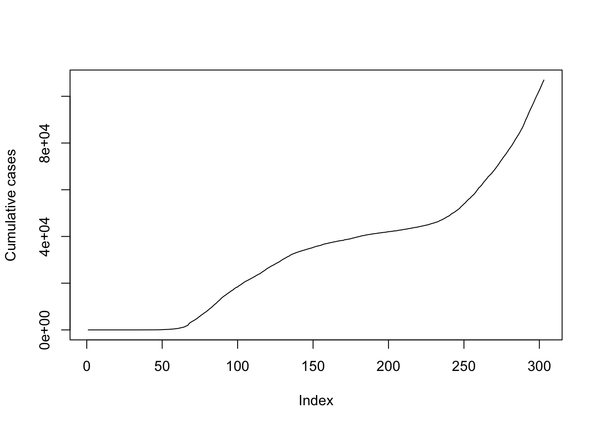
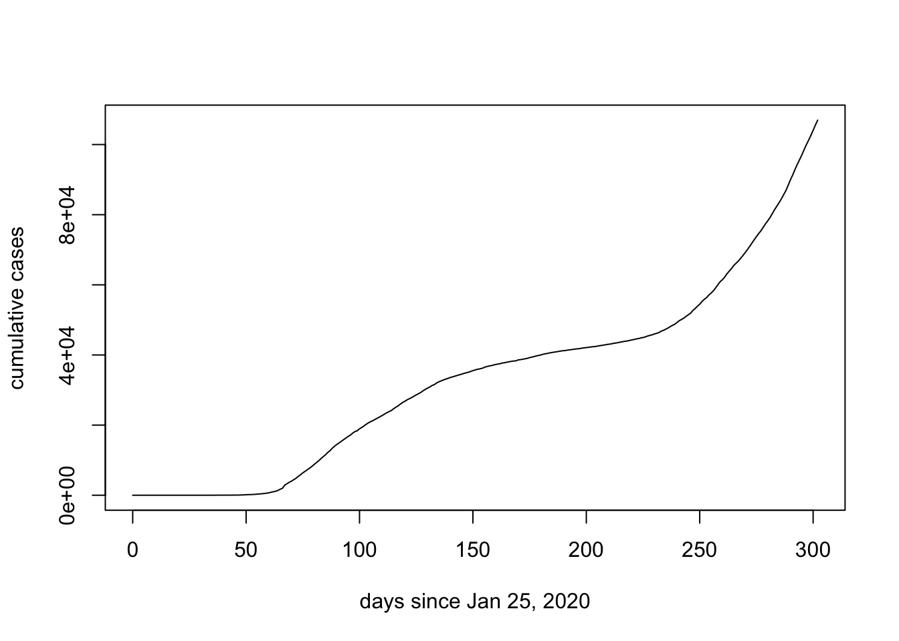
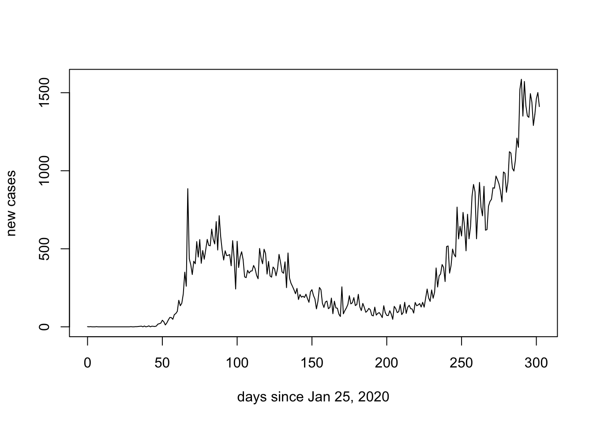
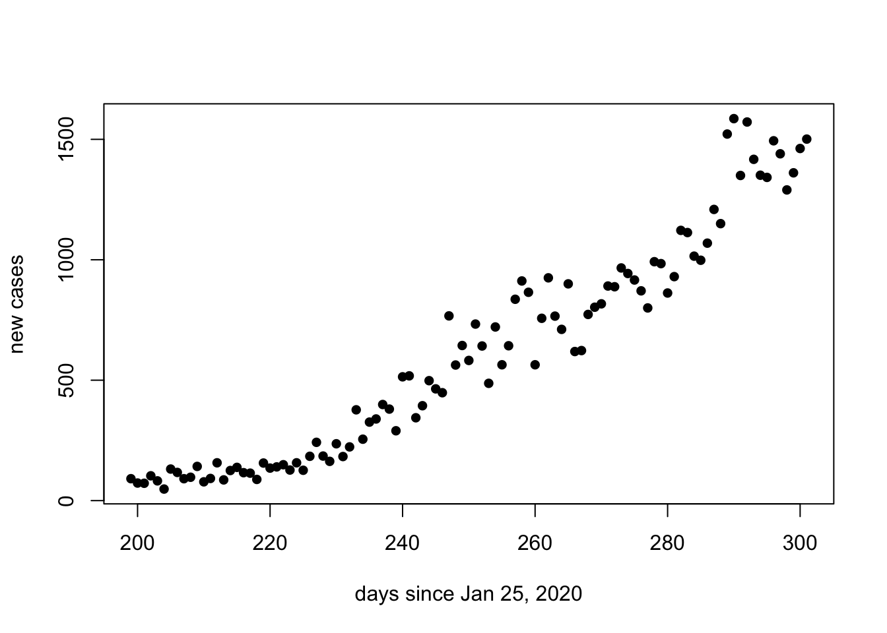
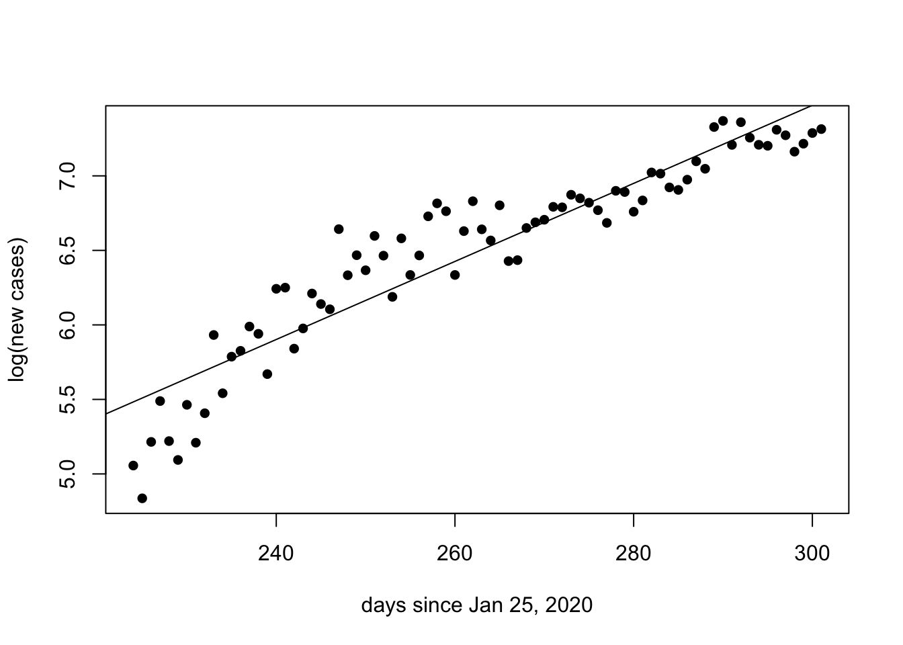

9 Tues Sept 29: Doubling time
DUE DATE: Thurs Oct 8
Today we will make a graph of the current COVID-19 data for Ontario. When only a small fraction of the population is resistant to an infection, the number of daily cases, in absence of any interventions such as physical distancing, is expected to grow exponentially over time. At the end of this exercise you will have calculated the doubling time for the second wave of COVID-19 in Ontario.
Visit the website: https://art-bd.shinyapps.io/covid19canada/, this site is the front end for the data we will use which are archived here (also referred to as the back end). These data can easily be pulled into R using this command:
COVID.data <- data.table::fread('https://raw.githubusercontent.com/ishaberry/Covid19Canada/master/timeseries_prov/active_timeseries_prov.csv', fill = TRUE)However, first you will need to install the data.table package:
install.packages("data.table")When asked: Do you want to install from sources the package which needs compilation? (Yes/no/cancel) enter no.
To view the data type:
head(COVID.data)## province date_active cumulative_cases cumulative_recovered cumulative_deaths
## 1: Alberta 25-01-2020 0 0 0
## 2: Alberta 26-01-2020 0 0 0
## 3: Alberta 27-01-2020 0 0 0
## 4: Alberta 28-01-2020 0 0 0
## 5: Alberta 29-01-2020 0 0 0
## 6: Alberta 30-01-2020 0 0 0
## active_cases active_cases_change
## 1: 0 0
## 2: 0 0
## 3: 0 0
## 4: 0 0
## 5: 0 0
## 6: 0 0head() is a command that shows the first 6 lines of the quantity inside the round brackets. COVID.data is a very large table of data. If I type COVID.data into the Console I will get more information than I want, so I instead use head().
So far we have pulled data from an online repository. However, it is good practice to save these data in case later the repository is removed. We can make copy of the data for our records using the following commands:
Note that the above contains the path to folders on my computer and saves COVID.data as the file COVID-data-save.csv. You will need to replace the path above with correct path to the folder on your own computer where you want to save these data. Setting the path is computer-specific, and so we always have problems with this in class because the solutions vary by student. Some tricks that work for me are:
type
getwd()into the Console. This will tell you the current working directory and can give you clues on the format of the path for your computer.clicking the
Sourcebutton on a .R file that you have made will print the path to that .R file into the Console.elect to save the file somewhere very simple, for example, on your Desktop and then move it to a more organized place later.
Navigate to the folder where you expected to save the data as a .csv file. You should be able to open the .csv file in Microsoft Excel. [THIS PART DOESN'T WORK - SORRY - JUST SKIP]
Now, the data table COVID.data contains data for all provinces and we would like to subset the data so that only the information pertaining to Ontario is left. We do this as follows:
data.ON <- COVID.data[province == "Ontario"]We should understand what variables are contained in our data set. Query the following in your Console:
colnames(data.ON)We will plot confirmed positive cases over time:
plot(data.ON$cumulative_cases, ylab = "Cumulative cases", typ = "l")
Note that we haven't provided an x-axis argument above. The x-axis should be date_active, however, from our previous exercise (Chapter 6), we recognize that dates need to be reformatted to be an appropriate x-axis.
head(data.ON$date_active)## [1] "25-01-2020" "26-01-2020" "27-01-2020" "28-01-2020" "29-01-2020"
## [6] "30-01-2020"The earliest date is January 25, 2020. We will use this as the origin and calculate the number of days since that time.
require(chron)
days.since <- julian(as.Date(data.ON$date_active, format = "%d-%m-%Y"),origin=as.Date("25-01-2020", format = "%d-%m-%Y"))If you get an error this may be because you have not installed the chron package. You can do so as install.packages("chron").
On my first attempt at the above code, I tried julian(data.ON$date_active). This generated an error because our dates from the COVID-19 dataset are formatted as a character string "01-25-2020", but the julian() function is expecting three numerical arguments julian(m,d,y). As such, julian(data.ON$Date) fails to provide three numerical arguments to the function and instead provides a single character string. For this reason the function as.Date() needs to be applied to data.ON$Date inside the julian() function.
We now have a quantity days.since that is appropriate for the x-axis of our graph:
plot(days.since, data.ON$cumulative_cases, ylab = "cumulative cases", xlab = "days since Jan 25, 2020", typ = "l")
However, rather than calculating cumumlative cases suppose that we might like to plot daily new cases. We do this by subtracting the cumulative cases for the previous day. The function diff() subtracts the element previous to the entry of a list and because the first element of the list has not preceeding value we add in a 0.
new.cases <- diff(c(0,data.ON$cumulative_cases))
plot(days.since, new.cases, ylab = "new cases", xlab = "days since Jan 25, 2020", typ = "l")
If we have done a good job of our work, it should be consistent with the official graph labelled as (B) below:
We can also focus in on just the second wave by adjusting the xlim argument:
plot(days.since[200:max(days.since)], new.cases[200:max(days.since)], ylab = "new cases", xlab = "days since Jan 25, 2020", pch = 16)
Note that the second wave of COVID-19 in Ontario appears to be consistent with exponential growth. Recall that when the y-axis of the graph is on a logarithmic scale, exponential growth will be represented as a straight line.

Figure 9.1: Straight lines illustrate exponential growth with different doubling times when the y-axis is plotted on a logarithmic scale
We can estimate the doubling time of the number of new cases for the second wave of COVID-19 in Ontario by perfoming a linear regression on the natural logarithm of the number of new cases. Below, we consider only the data 224 days after January 25 and onwards. The function lm() performs the linear regression and abline() plots the regression.
since.225 <- days.since[225:max(days.since)]
log.cases.225 <- log(new.cases[225:max(days.since)])
plot(since.225,log.cases.225, ylab = "log(new cases)", xlab = "days since Jan 25, 2020", pch = 16)
reg <- lm(log.cases.225~since.225)
abline(reg)
summary(reg)##
## Call:
## lm(formula = log.cases.225 ~ since.225)
##
## Residuals:
## Min 1Q Median 3Q Max
## -0.52002 -0.18024 0.00188 0.19444 0.53064
##
## Coefficients:
## Estimate Std. Error t value Pr(>|t|)
## (Intercept) -2.370840 0.562340 -4.216 0.000107 ***
## since.225 0.034343 0.002254 15.233 < 2e-16 ***
## ---
## Signif. codes: 0 '***' 0.001 '**' 0.01 '*' 0.05 '.' 0.1 ' ' 1
##
## Residual standard error: 0.237 on 49 degrees of freedom
## Multiple R-squared: 0.8257, Adjusted R-squared: 0.8221
## F-statistic: 232.1 on 1 and 49 DF, p-value: < 2.2e-16From the summary of the linear regression we are interested in the slope, because in the previous class we estimated the relationship between this slope and the doubling time.

Figure 9.2: The above output shows the slope of the regression as 0.0695 log cases per day
9.1 Questions
How many observations and how many variables are there in the
COVID.dataand thedata.ONfiles? (see the Environment tab) [1 mark]What command did you use to save the data as a .csv file? - IGNORE THIS QUESTION - INSTRUCTIONS WERE BAD [1 mark]
What do you estimate the doubling time of the second wave of COVID-19 in Ontario to be? Show your calculations [3 marks]
Write an R Script that performs the linear regression as illustrated above. Your script must make the figure including the regression line [7 marks]